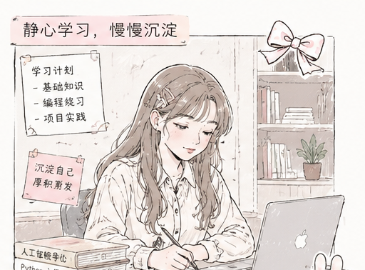
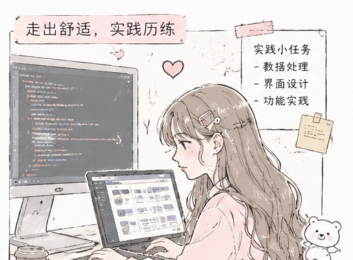
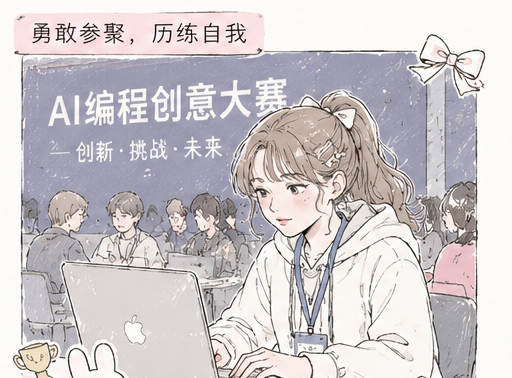
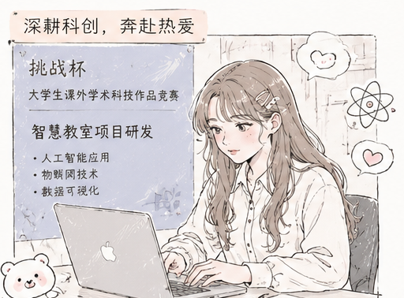
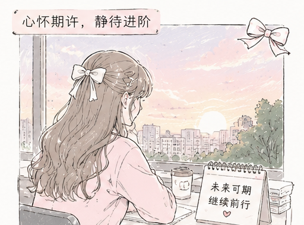

journey snap
一路走来，也一路记录
成长旅途不是一条笔直的线，而是一页页慢慢写满的温柔故事。
04 / journey
从初识到沉淀，从尝试到进阶，每一步都很珍贵。
journey snap
成长旅途不是一条笔直的线，而是一页页慢慢写满的温柔故事。
初次了解起点 AI 工作室，被轻松积极的氛围吸引，正式加入集体，开启全新的学习旅程。

放下浮躁心态，跟随团队节奏慢慢学习新知识，熟悉集体氛围，一点点积累基础能力。

主动参与各类实践小任务，把平日里学到的知识慢慢运用起来，在实践当中收获成长。

报名参与 AI 编程创意相关比赛，跳出舒适圈，敢于挑战自我，在赛场之中收获不一样的成长感悟。

投身挑战杯大型科创赛事，潜心参与智慧教室项目研发，接触前沿技术，拓宽自身眼界与认知。

经历一路学习与历练，已然做好准备，希望顺利完成进阶，以全新姿态继续前行。